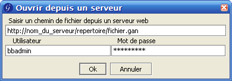

Charger/Sauver depuis/sur un serveur web
Depuis la version 1.9.8, GanttProject vous permet de charger un projet
directement depuis un serveur web. Vous devez donner l'adresse URL du fichier (et
le logging + le mot de passe si n�cessaire) pour travailler. Puis le projet
peut �tre sauv� sur votre disque dur.

Avec un serveur sp�cial vous pouvez charger et sauvegarder le projet
directement depuis/sur le serveur. Votre serveur doit �tre un " WebDAV-enabled-server".
Cela ne fonctionne pas avec un serveur "Apache" standard.